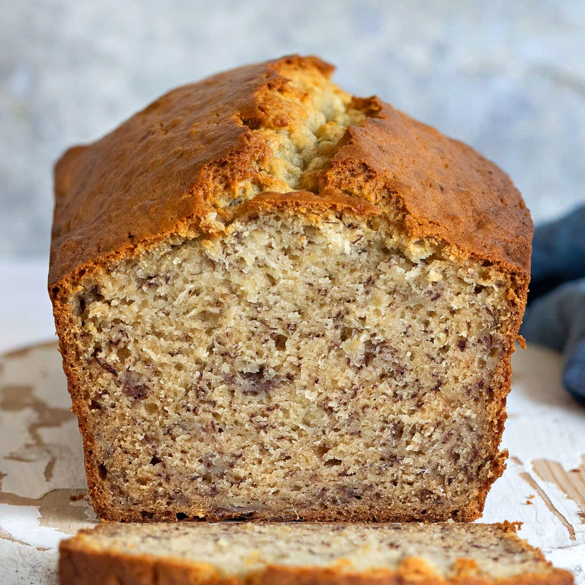

Banana Bread

Description
Banana bread is easy to make and convenient when you want to get rid of bananas that have turned brown. It is great to have during the fall time and goes well with a nice cup of coffee in the morning.
Ingredients
- Banana bread mix
- 1 Large egg
- 2 over-ripe bananas
- 1/3 Cup of water
- Butter
- Flour
- Walnuts
Steps
- Preheat oven to 350 degrees fahrenheit
- Mix the banana bread mix, egg, water, and bananas in a mixing bowl
- Sprinkle walnuts into bowl
- Cover bread pan with butter then flour so bread does not stick
- Pour mixture into bread pan and put in the oven for 45-50 minutes
- Take out of oven and let it rest before serving